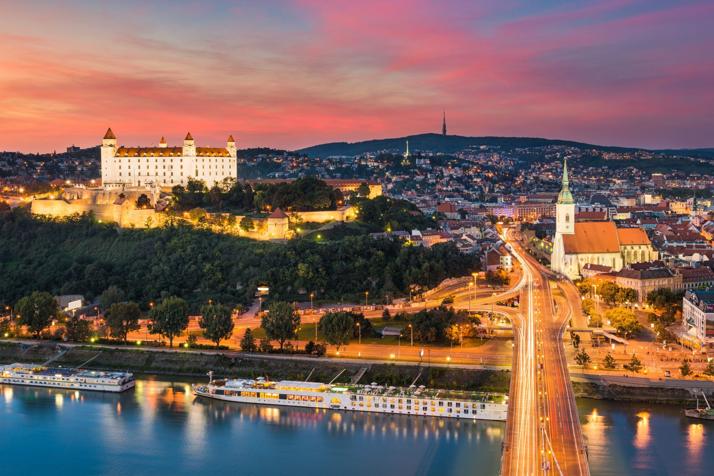

Bratislava

Kamzík
439 metrov vysoký vrch v pohorí Malé Karpaty, ktorý tvorí jednu z najvýznamnejších prírodných a rekreačných dominánt Bratislavy.
Hrad
Bratislavský hrad sa týči 80 metrov nad riekou Dunaj a je najznámejšou dominantou hlavného mesta Slovenska.
Dóm sv. Martina
Najväčší kostol v Bratislave.
Bratislava, hlavné a najväčšie mesto Slovenska, leží na juhozápade krajiny na oboch brehoch rieky Dunaj a na úpätí Malých Karpát. Je jedinou metropolou na svete, ktorá hraničí s dvoma samostatnými štátmi – s Rakúskom a Maďarskom. Vďaka tejto polohe bola odjakživa križovatkou kultúr a v rokoch 1563 až 1783 dokonca fungovala ako hlavné a korunovačné mesto Uhorska.